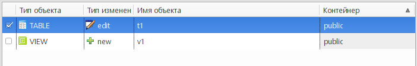

В Редакторе проекта pgCodeKeeper переключаемся в режим обновления проекта (в нижней части редактора переключаемся на вкладку Обновить проект).
На панели выбора используемой БД указываем параметры для получения схемы БД, на основании которой будет обновляться проект pgCodeKeeper.
На панели действий нажимаем кнопку Получить изменения. После недолгого ожидания на панели различий отобразится список различий с указанием типа изменения.
Флажками отмечаем объекты, которые мы хотим обновить. Нажимаем на кнопку Применить выбранные изменения, открывается диалог обновления проекта.
Проверяем список объектов, выбранных пользователем, и список зависимых объектов. Будьте внимательны! Исключение объектов-зависимостей из обновления может привести к ошибкам или неожиданным результатам.
Для подтверждения применения изменений к проекту нажать кнопку OK. В случае успешного применения изменений в консоли pgCodeKeeper появится соответствующее сообщение.